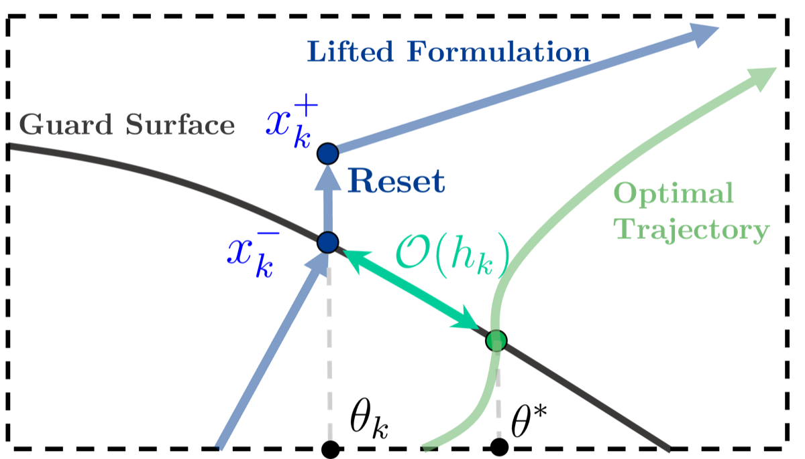
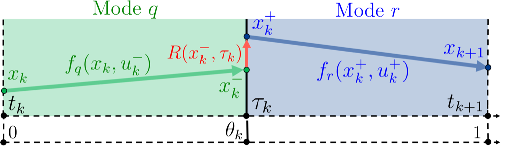
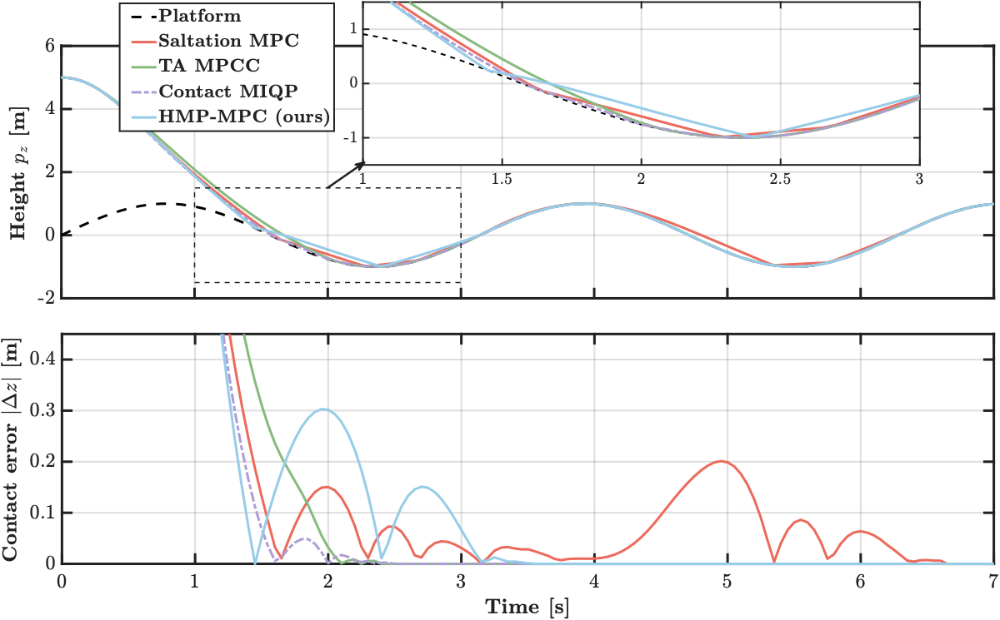
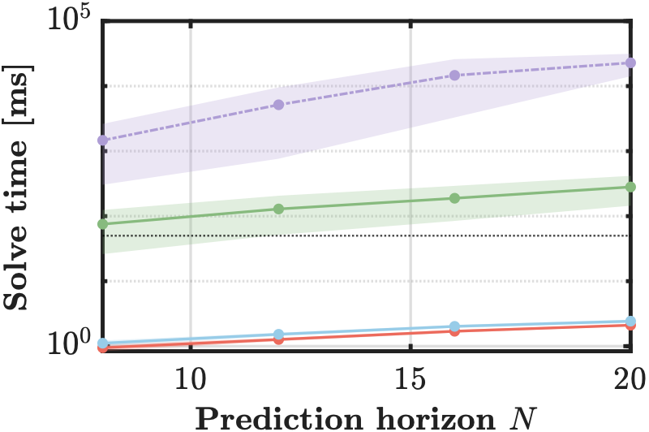
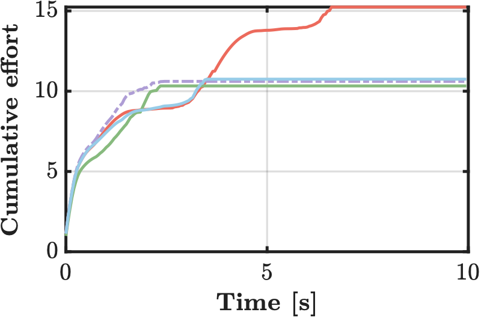
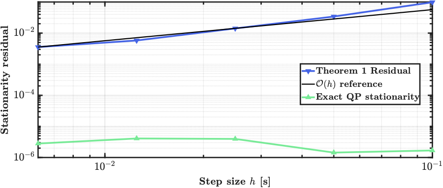

Switch-time-aware hybrid model predictive control

The problem
In hybrid systems with state-dependent instantaneous resets — a bouncing mass, a legged robot's footfall, a drone striking a surface — the event time is a decision variable coupled to the continuous states and inputs. Standard fixed-step MPC treats the impact instant as a passive consequence of the forward rollout. Its Jacobians neglect how sensitive the trajectory is to the exact switching time, so mode-switching decisions come out suboptimal.
Rigorous alternatives exist but are expensive. Mixed-integer QP uses binaries to optimise timings; mathematical programs with complementarity constraints optimise across transitions; moving finite-element meshes align the switching surface precisely. All rely on combinatorial search or large-scale formulations that are prohibitive at control rates. The gap: timing precision comparable to MPCC, at the speed of a fixed-step SQP solver.
Related work
Optimality conditions for hybrid systems are well established. Sussmann and Caines extended the Pontryagin Maximum Principle to hybrid systems, deriving conditions on both continuous controls and discrete switching times; Dmitruk and Kaganovich unified these as the Hybrid Minimum Principle (HMP). The HMP is traditionally a continuous-time, open-loop theory, and enforcing it inside a discrete-time receding horizon is the open problem. On the numerical side, Ross and Fahroo showed that for smooth systems, KKT multipliers converge to Pontryagin costates. To differentiate through a discrete transition one uses the saltation matrix, formalised by Aizerman and recently shown by Kong et al. to be practical for robotics — but those implementations still treat the switching time as an outcome, not a decision.
Preliminaries
Trajectories live on a hybrid time domain indexed by flow time \(t\) and jump counter \(j\). Flows follow \(\dot{x} = f_q(x,u)\); when the trajectory hits the guard \(G := \{x \mid g(x,t) = 0\}\) the state jumps via the reset \(x^+ = R(x^-,t_j)\). A transversality assumption keeps the crossing strict rather than grazing:
\[ \nabla_x g(x^-,t_j)^\top f_q(x^-,u^-) + \nabla_t g(x^-,t_j) \neq 0 \]The HMP gives the necessary conditions. With Hamiltonian \(H_q(x,u,\lambda) := L_q(x,u) + \lambda^\top f_q(x,u)\) and a multiplier \(\kappa_j\) on the active guard, the costate jumps and the Hamiltonian satisfies an event-time stationarity condition:
\[ \lambda^- = \nabla_x R^\top \lambda^+ + \kappa_j\nabla_x g + \nabla_x L_D \] \[ H_q^- = H_r^+ - \nabla_t L_D - \kappa_j\nabla_t g - (\lambda^+)^\top\nabla_t R \]The first-order sensitivity across the jump is captured by the saltation matrix, which maps \(\delta x^+ = \Xi\,\delta x^-\):
\[ \Xi = \nabla_x R + \frac{\left(f_r^+ - \nabla_x R\,f_q^- - \nabla_t R\right)\nabla_x g^\top}{\nabla_x g^\top f_q^- + \nabla_t g} \]The approach: lift the switching time
The horizon is partitioned into a grid with uniform steps \(h_k\), at most one transition per interval. The switching instant is parameterised by an intra-step fraction \(\theta_k \in (0,1)\), giving \(\tau_k := t_k + \theta_k h_k\). The pre-event arc flows exactly to the guard surface, the state resets, and the post-event arc carries on to the next node:
\[ x_k^- = x_k + h_k\theta_k\,f_{q_k}(x_k, u_k^-), \qquad x_{k+1} = x_k^+ + h_k(1-\theta_k)\,f_{r_k}(x_k^+, u_k^+) \]Lifting \(\theta_k\) into the decision vector is a redundant but optimisation-enabling parametrisation. It decouples event timing from state propagation, so the optimiser adjusts timing without implicitly differentiating through the guard — the guard constraint enforces consistency separately. The nonsmooth dependence on event timing becomes a smooth NLP with algebraic constraints, which an ordinary gradient-based solver can handle.

Theorem 1. Any KKT point of the lifted problem satisfies \[ \lambda_k^- = \nabla_x R^\top\lambda_k^+ + \kappa_k\nabla_x g + \nabla_x L_D \] \[ H_q^- = H_r^+ - \nabla_t L_D - \kappa_k\nabla_t g - (\lambda_k^+)^\top\nabla_t R + \mathcal{O}(h_k) \] — a first-order consistent discretisation of the HMP conditions. The optimiser never evaluates a saltation matrix; the hybrid sensitivities fall out of the KKT system.
Corollary 1 closes the loop with existing practice: eliminating \(\kappa_k\) from the KKT system reproduces the saltation-matrix costate update, \(\lambda_k^- = \Xi_k^\top\lambda_k^+ + \nabla_x L_D - \frac{D_t L_D}{D_t g}\nabla_x g + \mathcal{O}(h_k)\). Crucially, the \(\mathcal{O}(N)\) sparse block-tridiagonal structure survives, so the problem stays a convex QP that a first-order sparse solver can take.
Results
The benchmark is a 3D controlled bouncing mass landing on a platform moving as \(z_p(t) = \sin(2t)\), with restitution \(e = 0.75\) and tangential friction \(\mu_t = 0.2\). All controllers use \(h = 0.05\) s and \(N = 20\). The mass counts as attached once it stays within 1 cm of the surface for 0.3 s.

| Method (solver) | Attach (s) | Impacts | Cum. effort | Solve (ms) | Rel. cost |
|---|---|---|---|---|---|
| Saltation MPC (OSQP) | 6.35 | 6 | 15.2 | 2.11 | 0.9× |
| HMP-MPC (OSQP) | 3.20 | 4 | 10.7 | 2.43 | 1.0× |
| HMP-MPC (IPOPT) | 3.25 | 4 | 11.4 | 26.6 | 11× |
| Time-aware MPCC (IPOPT) | 2.10 | 2 | 10.3 | 281 | 116× |
| Contact MIQP (Bonmin) | 2.05 | 5 | 10.6 | 22 800 | 9383× |
The fixed-grid baseline cannot place the reset inside a step, so it mistimes the impact: its one-step prediction error across an impact-containing interval averages 7.9 cm, against 0.7 cm for the lifted transcription. Because that error exceeds the attachment band itself, the baseline overshoots and rebounds — 6 impacts and 6.35 s to attach, against 4 impacts and 3.20 s.
The offline-quality formulations attach soonest, as you would expect from methods solving the nonlinear or combinatorial problem to near-optimality. The point is what that costs. Comparing the two IPOPT rows isolates the transcription: the lifted formulation is 10.6× cheaper than the complementarity expansion at the same solver. Comparing the two HMP-MPC rows isolates the solver: a further 10.9×, available only because the lifted transcription stays a convex QP. Together, a 116× end-to-end speedup over time-aware MPCC, and roughly 9400× over the MIQP — which at 22.8 s per cycle is three orders of magnitude beyond the sampling period.


Is the theory actually holding?

Theorem 1 bounds the gap to the continuous-time HMP by \(\mathcal{O}(h_k)\), and at \(h = 0.05\) s that remainder does not vanish. Sweeping \(h \in [10^{-2},10^{-1}]\), the residual decays with an empirical slope of 1.21, consistent with the first-order bound — while the QP stationarity residual stays flat at solver tolerance, confirming the decay is discretisation error rather than solver accuracy. That gives a direct criterion for choosing \(h\): shrink it until the residual falls below what the task demands, subject to solve time growing linearly in \(N\).
Robustness to contact model error
Sweeping the plant's true restitution over \([0, 0.95]\) with 40 randomised initial conditions per value, run once with each controller given the true value and once holding the nominal \(e_{\text{MPC}} = 0.75\). Given exact physics, the fixed-grid baseline still misses roughly a third of its landings at \(e_{\text{true}} \ge 0.85\), while HMP-MPC captures 98–100%. What fails on a bouncy surface is timing, not modelling: a larger \(e\) amplifies any error in the predicted impact instant. Under model mismatch, HMP-MPC stays within the confidence interval everywhere while the baseline loses 26 points at \(e = 0.95\) — because minimising over \(\theta_k\) brings the mass to contact at near-zero relative velocity, and since \(v^+ = -e\,v^-\), model error enters only in proportion to \(v^-\). Arriving slowly attenuates the error rather than leaving the controller to reject it afterwards.
What this gives you
- Impact timing as a first-class decision variable, at fixed-step SQP cost.
- KKT conditions provably consistent with the Hybrid Minimum Principle to first order — no saltation matrices evaluated at runtime.
- 30% less cumulative control effort than the only other real-time-capable method, for a 15% increase in solve time.
Current limits: validation covers a single impact per horizon on a low-dimensional benchmark. Extending to multi-contact and higher-dimensional regimes, handling unknown restitution, and hardware validation are ongoing.